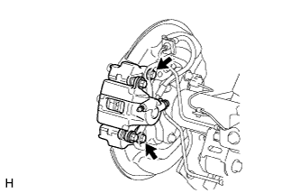
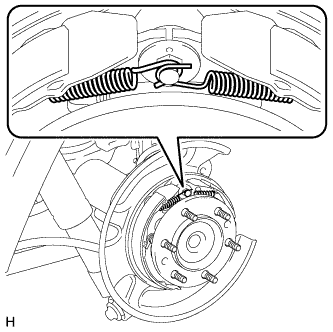
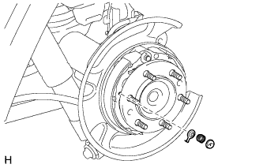
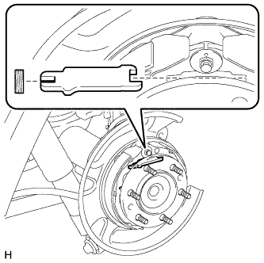
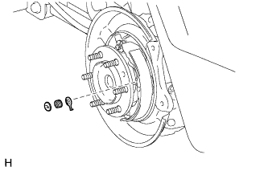
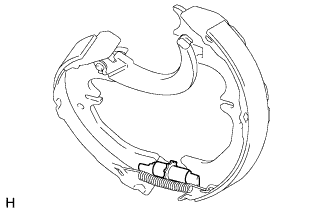
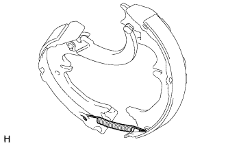
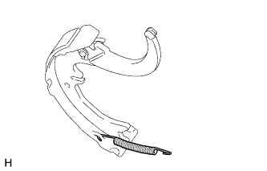
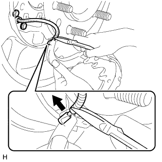
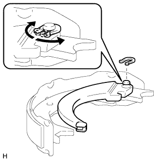

СТОЯНОЧНЫЙ ТОРМОЗ В СБОРЕ > РАЗБОРКА |
| 1. СНИМИТЕ ЛЕВОЕ ЗАДНЕЕ КОЛЕСО |
| 2. ОТСОЕДИНИТЕ КОЛЕСНЫЙ ТОРМОЗНОЙ ЦИЛИНДР ЛЕВОГО ЗАДНЕГО ДИСКОВОГО ТОРМОЗА В СБОРЕ |
|  |
Выверните 2 болта и отсоедините колесный тормозной цилиндр заднего дискового тормоза.
Подвесьте колесный цилиндр дискового тормоза с помощью отрезка провода.
| 3. СНИМИТЕ ЗАДНИЙ ТОРМОЗНОЙ ДИСК |
 |
Если диск планируется использовать повторно, нанесите метки на задний диск и ступицу полуоси.
| *1 | Метка |
 |
Поверните регулятор, пока диск не будет вращаться свободно, а затем снимите диск.
 | Регулятор сводит колодки |
 | Регулятор разводит колодки |
| 4. СНИМИТЕ СТЯЖНУЮ ВОЗВРАТНУЮ ПРУЖИНУ КОЛОДКИ СТОЯНОЧНОГО ТОРМОЗА |
|  |
Снимите 2 стяжных возвратных пружины колодок стояночного тормоза.
| 5. ОТСОЕДИНИТЕ ЛЕВУЮ КОЛОДКУ СТОЯНОЧНОГО ТОРМОЗА № 1 В СБОРЕ |
|  |
Снимите тарелки пружинного фиксатора колодки стояночного тормоза и пружинный фиксатор колодки стояночного тормоза, чтобы отсоединить колодку стояночного тормоза № 1 в сборе от опорного диска.
| 6. СНИМИТЕ ЛЕВУЮ РАЗЖИМНУЮ ПЛАНКУ КОЛОДОК СТОЯНОЧНОГО ТОРМОЗА |
|  |
Снимите разжимную планку колодок стояночного тормоза и пружину сжатия разжимной планки колодок стояночного тормоза.
| 7. ОТСОЕДИНИТЕ ЛЕВУЮ КОЛОДКУ СТОЯНОЧНОГО ТОРМОЗА № 2 В СБОРЕ |
|  |
Снимите тарелку пружинного фиксатора колодки стояночного тормоза и пружинный фиксатор колодки стояночного тормоза, чтобы отсоединить колодку стояночного тормоза № 2 в сборе от опорного диска.
| 8. СНИМИТЕ ВИНТОВОЕ ПРИСПОСОБЛЕНИЕ ДЛЯ РЕГУЛИРОВКИ ЗАЗОРОВ КОЛОДОК СТОЯНОЧНОГО ТОРМОЗА |
|  |
Снимите винтовое приспособление для регулировки зазоров колодок стояночного тормоза.
| 9. СНИМИТЕ ЛЕВУЮ КОЛОДКУ СТОЯНОЧНОГО ТОРМОЗА № 1 В СБОРЕ |
|  |
Отсоедините стяжную возвратную пружину колодки стояночного тормоза, чтобы снять колодку стояночного тормоза № 1 в сборе.
| 10. СНИМИТЕ СТЯЖНУЮ ВОЗВРАТНУЮ ПРУЖИНУ КОЛОДКИ СТОЯНОЧНОГО ТОРМОЗА |
|  |
Снимите стяжную возвратную пружину колодки стояночного тормоза с колодки стояночного тормоза № 2 в сборе.
| 11. СНИМИТЕ КОЛОДКУ СТОЯНОЧНОГО ТОРМОЗА № 2 В СБОРЕ С РЫЧАГОМ ПРИВОДА КОЛОДОК СТОЯНОЧНОГО ТОРМОЗА |
|  |
С помощью круглогубцев отсоедините трос привода стояночного тормоза № 3 в сборе от рычага привода колодок стояночного тормоза, как показано на рисунке.
| 12. СНИМИТЕ РЫЧАГ ПРИВОДА ЛЕВЫХ КОЛОДОК СТОЯНОЧНОГО ТОРМОЗА |
|  |
Снимите разрезную шайбу, шайбу и рычаг привода колодок стояночного тормоза с колодки стояночного тормоза № 2 в сборе, как показано на рисунке.
| 13. СНИМИТЕ ШТИФТ ПРУЖИННОГО ФИКСАТОРА КОЛОДКИ СТОЯНОЧНОГО ТОРМОЗА |
Снимите штифт пружинного фиксатора колодки стояночного тормоза (с передней стороны).
Снимите штифт пружинного фиксатора колодки стояночного тормоза (с задней стороны).